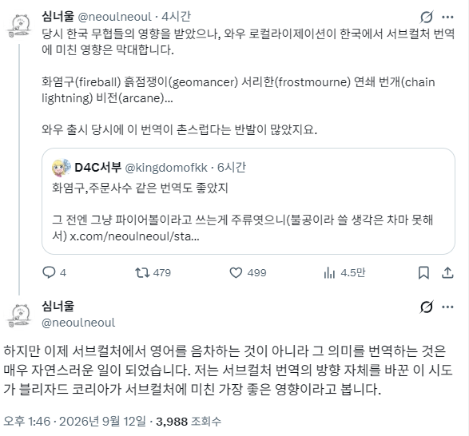

서리한은 진짜 goat인듯

서리한은 진짜 goat인듯
뒤틀린 황천의 썩은 살점
윈도 ui 번역도 이런 거 많잖음
즐겨찾기 바탕화면 작업표시줄 탐색기
파멸의 인도자, 은빛성기사단 ㅇㅇ
반지의 제왕이 먼저 아닌가
리븐델, 깊은골
깐프
클베 때부터 드문드문 해왔는데 난 지금도 와우 번역이 너무 좋아
내가 지금 만들어서 쓰는게 영어로는 P. O. W. X3라는 총인데 이거 번역 이름 박살포
넘 귀엽게 잘 번역했다 생각함
개인적으로는
워송클랜 - 전쟁노래부족
블랙락클랜 - 검은바위부족
이쪽이 참 맘에 듬
그랫던 블자가 왜 디아블로 신작들에선 흙흙
저거 따라한다고 오만곳에 똥쳐뿌리는 창조번역버러지들 존나 억척스러움
요즘 GW 번역팀이 딱 그 꼬라지임
외곬창 그믐아비 신비갑충
천리망꾼 씨발ㅋㅋㅋ
대지록자 맛좀 볼래?
난 저란 번역이 정말 좋다고 생각함
포캣몬 이름 번역하던것처럼 배운사람들이 맛깔나게 한 맛이있음
신박 황천 ㅋㅋ 이젠 현실에서 자주씀
돌다지 수호자
서리한이 진짜 고트 인정
그랬던 블쟈가
깐프가 되어 우리곁에 있네요
비전 마법이 한자인거 지금알았네
화염구가 ㄹㅇ 초월번역이지
화염구 초반에 이상하다고 투덜대는 사람 많았는데 시간 지나니까 싹 다 사라짐 ㅋㅋ
한아비 바람살
서리한의 '한' 의 뜻을 오늘 알았네 ㅋㅋ